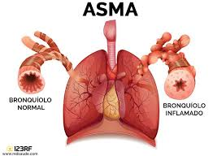

La Enciclopedia Ilustrada de Salud incluye más de 4,000 artículos acerca de enfermedades, exámenes, síntomas, lesiones y procedimientos quirúrgicos. Aquí encontrará información detallada sobre una variedad de temas médicos.
Temas Destacados
Artículo 1: Asma
El asma es una enfermedad crónica que afecta a personas de todas las edades. Se debe a la inflamación y la contracción de los músculos que rodean las vías respiratorias, las cuales dificultan la respiración.

Para más información haga clic en el siguiente enlace:
Articulo Asma
Artículo 2: Epilepsia
La epilepsia es un trastorno cerebral en el cual una persona tiene convulsiones repetidas durante un tiempo. Las convulsiones son episodios de actividad eléctrica descontrolada y anormal de las neuronas que puede causar cambios en la atención o el comportamiento como movimientos corporales.
Para más información haga clic en el siguiente enlace:
Articulo Epilepsia
Artículo 3: Gripe
La gripe (influenza) es una infección viral respiratoria que causa fiebre, escalofríos, secreción nasal, dolor del cuerpo y tos. Se propaga fácilmente de persona a persona. La gripe puede causar síntomas de moderados a graves. La mayoría de las personas se recuperan.
Para más información haga clic en el siguiente enlace:
Articulo Gripe
Artículo 4: Sífilis
La sífilis es una infección de transmisión sexual (ITS) bacteriana que se puede prevenir y curar. Si no se trata puede causar graves problemas de salud.
Para más información haga clic en el siguiente enlace:
Articulo Sífilis